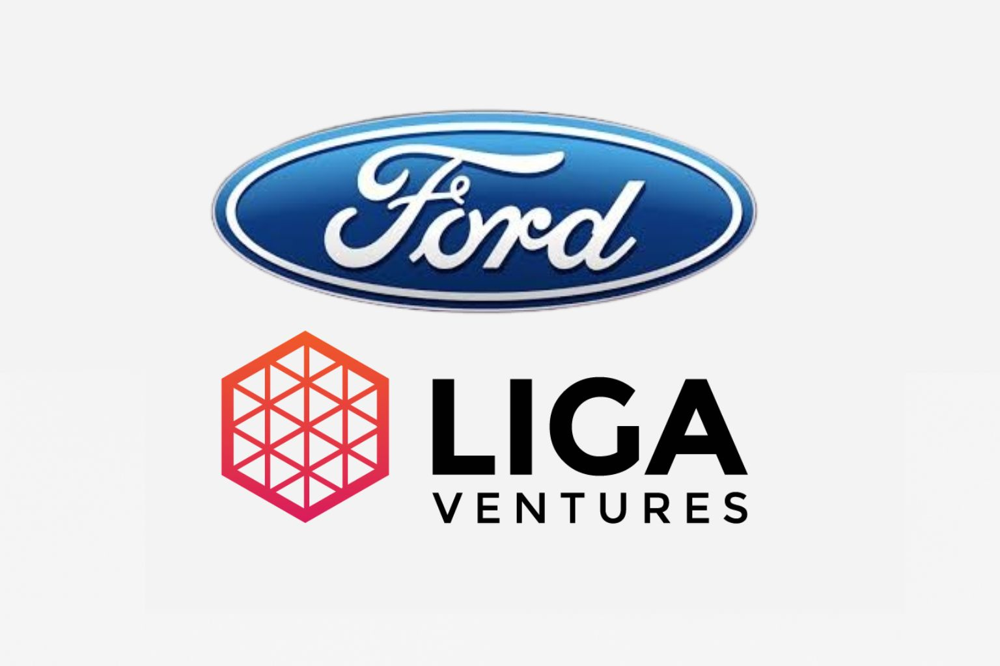

I'm Lucas Mendes Barbosa, a Data Scientist specializing in LLMs, NLP, and OCR.
About
Hi! I'm Lucas, a Data & AI professional with 4+ years of experience in LLMs, NLP, data pipelines, and visualization. I use Python, SQL, AWS/GCP, and automation to turn data into smart, impactful solutions. Graduated in Computer Science and currently pursuing a postgrad in Machine Learning Engineering, I'm passionate about understanding how AI truly works—especially in NLP and Explainable AI. One of my favorite projects merges music and AI through emotion recognition, which inspired the name Music MoodAI — see more in the Back to the Future tab. I believe in a data-driven culture and love sharing knowledge to support better decision-making.
📄 View My CVExpertise on
- Data Scientist, AI Engineer, Machine Learning Engineer, Data Engineer, Data Analyst, and Lifelong Learner
Experience
Lee, Brock, Camargo Advogados
Data Scientist Mid-Level
March 2025 - Present
Specialization focused on machine learning (ML), deep learning (DL), and MLOps, covering supervised and unsupervised learning, neural networks, recommendation systems, computer vision, and generative AI (LLMs, GANs, BERT). Gained practical experience with Python, API development (Flask, FastAPI), and big data tools (Databricks, Spark, Kafka) for data processing and streaming. Explored cloud platforms (AWS, Azure) and data architectures such as data lakes and warehouses. Skilled in designing, training, and deploying ML and DL models using containerization (Docker, Kubernetes) and CI/CD workflows, with a focus on monitoring, versioning, and production security best practices.
Liga Ventures
Associate Data Analyst
May 2021 - October 2024
Advanced from intern to Associate Data Analyst. Built scalable data pipelines (Airflow, PySpark), recommendation systems with ML/DL, and dashboards (Looker Studio, Power BI). Led data quality initiatives, mentored team members, and contributed to a strong data-driven culture. Skilled in API development and cloud platforms (AWS, GCP).
Education
FIAP
Postgraduate Specialization in Machine Learning Engineering
May 2025 – Present
Specialization focused on machine learning, deep learning, and MLOps. Topics include supervised and unsupervised learning, recommendation systems, computer vision, and generative AI (LLMs, GANs, BERT). Gained hands-on experience with Python, APIs, and big data tools such as Databricks, Spark, and Kafka. Also explored cloud platforms and CI/CD workflows with Docker, deployment strategies, monitoring, and model security best practices.
UNISAGRADO
Bachelor’s Degree in Computer Science
January 2021 – December 2024
GPA: 9.51
Strong academic foundation in software development, data structures, algorithms, databases, and computer systems. Engaged in scientific research on natural language processing (NLP) and music emotion recognition using real-world datasets. Awarded Honorable Mention for research presented at national symposiums. Developed projects integrating AI, NLP, and human-computer interaction to deliver innovative solutions.
Recent Works
Here are some of my recent impactful works blending AI, data, and creativity, with several honored for excellence. Explore away!
-
Undergraduate ThesisWhy is this site called Music MoodAI?
-
New AgeWhy did this site change so much?
-
Career UpdateI’ve joined a new role as a Mid-Level Data Scientist.
-
Talks and PresentationsTalk on data-driven culture at Ford Motor Company
-
Award-WinningMy First Scientific Award.
-
Award-WinningMy Second Scientific Award.
Music MoodAI: AI-Driven Music Emotion Analysis
Music MoodAI uses AI to reveal emotions in song lyrics, classifying them into 28 categories. Created during my undergraduate thesis, it combines deep learning, NLP, and HCI in an intuitive web platform. Read the full paper in Portuguese below.
- JavaScript
- HTML
- CSS
- Python
- FastAPI

New Beginnings and Growth
I started Music MoodAI as an undergraduate exploring AI. Now, as a Mid-Level Data Scientist and postgraduate in Machine Learning Engineering, the site has evolved to reflect my growth. This new version represents my personal and professional journey. You can learn more by reading my scientific paper below, which details the project's origin and development.
- Branding
- Personal Growth
- Professional Development
Mid-Level Data Scientist at LBCA
In May 2025, I started a new position as a Mid-Level Data Scientist at LBCA. This new chapter represents a meaningful milestone in my career, where I continue to apply data science and AI to solve complex challenges and foster innovation — now within the legal domain.
- Growth
- Artificial Intelligence
- Data-Driven Culture
- Legal Innovation
- AI Agents
Sharing Insights on AI and Data-Driven Culture
I had the privilege of sharing insights on Artificial Intelligence and data-driven culture during a recent meeting with Ford Motor Company, thanks to Liga Ventures. I’m grateful to all who participated and contributed to this engaging and productive discussion. Together, we’re advancing the positive impact of AI in our industries.
- Innovation
- Data Driven
- Storytelling
Honorable Mention – Music & AI Research
My first scientific award! I received an Honorable Mention at the 26th Scientific and Technological Initiation Symposium of FATEC-SP for my research on how AI can recognize emotions in music. A huge thanks to UNISAGRADO and FATEC-SP for supporting this achievement and encouraging innovation in science and technology. To dive deeper, access the full scientific paper in Portuguese by clicking the button below.
- Python
- Machine Learning
- Deep Learning
- Natural Language Processing
- Human-Computer Interaction
Award for Excellence in AI Research
I received first place for my research conducted during my undergraduate studies, which focused on applying artificial intelligence techniques for emotion recognition in music. The project involved benchmarking multiple AI models to identify the most effective approaches. This work demonstrates the significant impact of AI on music analysis and human-computer interaction. To dive deeper, access the full scientific paper in Portuguese by clicking the button below.
- Python
- Machine Learning
- Deep Learning
- Natural Language Processing
- Human-Computer Interaction
Get In Touch
I'm always open to meaningful conversations. Whether you have a question, want to talk about AI, data, or innovative tech — feel free to reach out.